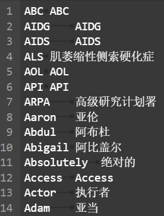

题目 题目链接点这里
赛事背景 目前神经机器翻译技术已经取得了很大的突破，但在特定领域或行业中，由于机器翻译难以保证术语的一致性，导致翻译效果还不够理想。对于术语名词、人名地名等机器翻译不准确的结果，可以通过术语词典进行纠正，避免了混淆或歧义，最大限度提高翻译质量。
赛事任务 基于术语词典干预的机器翻译挑战赛选择以英文为源语言，中文为目标语言的机器翻译。本次大赛除英文到中文的双语数据，还提供英中对照的术语词典。参赛队伍需要基于提供的训练数据样本从多语言机器翻译模型的构建与训练，并基于测试集以及术语词典，提供最终的翻译结果，数据包括：
训练集：双语数据：中英14万余双语句对
开发集：英中1000双语句对
测试集：英中1000双语句对
术语词典：英中2226条
评审规则 数据说明 所有文件均为UTF-8编码，其中测评官方发放的训练集、开发集、测试集和术语词典皆为文本文件，格式如下所示：
训练集为双语数据，每行为一个句对样本，其格式如图1所示。
术语词典格式如图2所示。

评估指标 对于参赛队伍提交的测试集翻译结果文件，采用自动评价指标BLUE-4进行评价，具体工具使用sacrebleu开源版本。
Task 1 baseline 代码 代码如下：
import torchtexttorchtext.disable_torchtext_deprecation_warning() import torchimport torch.nn as nnimport torch.optim as optimfrom torch.utils.data import Dataset, DataLoaderfrom torchtext.data.utils import get_tokenizerfrom collections import Counterimport randomfrom torch.utils.data import Subset, DataLoaderimport time
class TranslationDataset (Dataset ): def __init__ (self, filename, terminology ): self.data = [] with open (filename, 'r' , encoding='utf-8' ) as f: for line in f: en, zh = line.strip().split('\t' ) self.data.append((en, zh)) self.terminology = terminology self.en_tokenizer = get_tokenizer('basic_english' ) self.zh_tokenizer = list en_vocab = Counter(self.terminology.keys()) zh_vocab = Counter() for en, zh in self.data: en_vocab.update(self.en_tokenizer(en)) zh_vocab.update(self.zh_tokenizer(zh)) self.en_vocab = ['<pad>' , '<sos>' , '<eos>' ] + list (self.terminology.keys()) + [word for word, _ in en_vocab.most_common(10000 )] self.zh_vocab = ['<pad>' , '<sos>' , '<eos>' ] + [word for word, _ in zh_vocab.most_common(10000 )] self.en_word2idx = {word: idx for idx, word in enumerate (self.en_vocab)} self.zh_word2idx = {word: idx for idx, word in enumerate (self.zh_vocab)} def __len__ (self ): return len (self.data) def __getitem__ (self, idx ): en, zh = self.data[idx] en_tensor = torch.tensor([self.en_word2idx.get(word, self.en_word2idx['<sos>' ]) for word in self.en_tokenizer(en)] + [self.en_word2idx['<eos>' ]]) zh_tensor = torch.tensor([self.zh_word2idx.get(word, self.zh_word2idx['<sos>' ]) for word in self.zh_tokenizer(zh)] + [self.zh_word2idx['<eos>' ]]) return en_tensor, zh_tensor def collate_fn (batch ): en_batch, zh_batch = [], [] for en_item, zh_item in batch: en_batch.append(en_item) zh_batch.append(zh_item) en_batch = nn.utils.rnn.pad_sequence(en_batch, padding_value=0 , batch_first=True ) zh_batch = nn.utils.rnn.pad_sequence(zh_batch, padding_value=0 , batch_first=True ) return en_batch, zh_batch
class Encoder (nn.Module): def __init__ (self, input_dim, emb_dim, hid_dim, n_layers, dropout ): super ().__init__() self.embedding = nn.Embedding(input_dim, emb_dim) self.rnn = nn.GRU(emb_dim, hid_dim, n_layers, dropout=dropout, batch_first=True ) self.dropout = nn.Dropout(dropout) def forward (self, src ): embedded = self.dropout(self.embedding(src)) outputs, hidden = self.rnn(embedded) return outputs, hidden class Decoder (nn.Module): def __init__ (self, output_dim, emb_dim, hid_dim, n_layers, dropout ): super ().__init__() self.output_dim = output_dim self.embedding = nn.Embedding(output_dim, emb_dim) self.rnn = nn.GRU(emb_dim, hid_dim, n_layers, dropout=dropout, batch_first=True ) self.fc_out = nn.Linear(hid_dim, output_dim) self.dropout = nn.Dropout(dropout) def forward (self, input , hidden ): embedded = self.dropout(self.embedding(input )) output, hidden = self.rnn(embedded, hidden) prediction = self.fc_out(output.squeeze(1 )) return prediction, hidden class Seq2Seq (nn.Module): def __init__ (self, encoder, decoder, device ): super ().__init__() self.encoder = encoder self.decoder = decoder self.device = device def forward (self, src, trg, teacher_forcing_ratio=0.5 ): batch_size = src.shape[0 ] trg_len = trg.shape[1 ] trg_vocab_size = self.decoder.output_dim outputs = torch.zeros(batch_size, trg_len, trg_vocab_size).to(self.device) _, hidden = self.encoder(src) input = trg[:, 0 ].unsqueeze(1 ) for t in range (1 , trg_len): output, hidden = self.decoder(input , hidden) outputs[:, t, :] = output teacher_force = random.random() < teacher_forcing_ratio top1 = output.argmax(1 ) input = trg[:, t].unsqueeze(1 ) if teacher_force else top1.unsqueeze(1 ) return outputs
def load_terminology_dictionary (dict_file ): terminology = {} with open (dict_file, 'r' , encoding='utf-8' ) as f: for line in f: en_term, ch_term = line.strip().split('\t' ) terminology[en_term] = ch_term return terminology
def train (model, iterator, optimizer, criterion, clip ): model.train() epoch_loss = 0 for i, (src, trg) in enumerate (iterator): src, trg = src.to(device), trg.to(device) optimizer.zero_grad() output = model(src, trg) output_dim = output.shape[-1 ] output = output[:, 1 :].contiguous().view(-1 , output_dim) trg = trg[:, 1 :].contiguous().view(-1 ) loss = criterion(output, trg) loss.backward() torch.nn.utils.clip_grad_norm_(model.parameters(), clip) optimizer.step() epoch_loss += loss.item() return epoch_loss / len (iterator)
if __name__ == '__main__' : start_time = time.time() device = torch.device('cuda' if torch.cuda.is_available() else 'cpu' ) terminology = load_terminology_dictionary('../dataset/en-zh.dic' ) dataset = TranslationDataset('../dataset/train.txt' ,terminology = terminology) N = 1000 subset_indices = list (range (N)) subset_dataset = Subset(dataset, subset_indices) train_loader = DataLoader(subset_dataset, batch_size=32 , shuffle=True , collate_fn=collate_fn) INPUT_DIM = len (dataset.en_vocab) OUTPUT_DIM = len (dataset.zh_vocab) ENC_EMB_DIM = 256 DEC_EMB_DIM = 256 HID_DIM = 512 N_LAYERS = 2 ENC_DROPOUT = 0.5 DEC_DROPOUT = 0.5 enc = Encoder(INPUT_DIM, ENC_EMB_DIM, HID_DIM, N_LAYERS, ENC_DROPOUT) dec = Decoder(OUTPUT_DIM, DEC_EMB_DIM, HID_DIM, N_LAYERS, DEC_DROPOUT) model = Seq2Seq(enc, dec, device).to(device) optimizer = optim.Adam(model.parameters()) criterion = nn.CrossEntropyLoss(ignore_index=dataset.zh_word2idx['<pad>' ]) N_EPOCHS = 10 CLIP = 1 for epoch in range (N_EPOCHS): train_loss = train(model, train_loader, optimizer, criterion, CLIP) print (f'Epoch: {epoch+1 :03} | Train Loss: {train_loss:.3 f} ' ) torch.save(model.state_dict(), './translation_model_GRU.pth' ) end_time = time.time() elapsed_time_minute = (end_time - start_time)/60 print (f"Total running time: {elapsed_time_minute:.2 f} minutes" )
/usr/local/lib/python3.10/site-packages/tqdm/auto.py:21: TqdmWarning: IProgress not found. Please update jupyter and ipywidgets. See https://ipywidgets.readthedocs.io/en/stable/user_install.html
from .autonotebook import tqdm as notebook_tqdm
Epoch: 001 | Train Loss: 6.545
Epoch: 002 | Train Loss: 6.059
Epoch: 003 | Train Loss: 6.020
Epoch: 004 | Train Loss: 5.980
Epoch: 005 | Train Loss: 5.936
Epoch: 006 | Train Loss: 5.867
Epoch: 007 | Train Loss: 5.801
Epoch: 008 | Train Loss: 5.715
Epoch: 009 | Train Loss: 5.638
Epoch: 010 | Train Loss: 5.556
Total running time: 0.81 minutes
在开发集上进行模型评价
import torchfrom sacrebleu.metrics import BLEUfrom typing import List
def load_sentences (file_path: str ) -> List [str ]: with open (file_path, 'r' , encoding='utf-8' ) as f: return [line.strip() for line in f] def translate_sentence (sentence: str , model: Seq2Seq, dataset: TranslationDataset, terminology, device: torch.device, max_length: int = 50 ): model.eval () tokens = dataset.en_tokenizer(sentence) tensor = torch.LongTensor([dataset.en_word2idx.get(token, dataset.en_word2idx['<sos>' ]) for token in tokens]).unsqueeze(0 ).to(device) with torch.no_grad(): _, hidden = model.encoder(tensor) translated_tokens = [] input_token = torch.LongTensor([[dataset.zh_word2idx['<sos>' ]]]).to(device) for _ in range (max_length): output, hidden = model.decoder(input_token, hidden) top_token = output.argmax(1 ) translated_token = dataset.zh_vocab[top_token.item()] if translated_token == '<eos>' : break if translated_token in terminology.values(): for en_term, ch_term in terminology.items(): if translated_token == ch_term: translated_token = en_term break translated_tokens.append(translated_token) input_token = top_token.unsqueeze(1 ) return '' .join(translated_tokens)
def evaluate_bleu (model: Seq2Seq, dataset: TranslationDataset, src_file: str , ref_file: str , terminology,device: torch.device ): model.eval () src_sentences = load_sentences(src_file) ref_sentences = load_sentences(ref_file) translated_sentences = [] for src in src_sentences: translated = translate_sentence(src, model, dataset, terminology, device) translated_sentences.append(translated) bleu = BLEU() score = bleu.corpus_score(translated_sentences, [ref_sentences]) return score
if __name__ == '__main__' : device = torch.device('cuda' if torch.cuda.is_available() else 'cpu' ) terminology = load_terminology_dictionary('../dataset/en-zh.dic' ) dataset = TranslationDataset('../dataset/train.txt' , terminology) INPUT_DIM = len (dataset.en_vocab) OUTPUT_DIM = len (dataset.zh_vocab) ENC_EMB_DIM = 256 DEC_EMB_DIM = 256 HID_DIM = 512 N_LAYERS = 2 ENC_DROPOUT = 0.5 DEC_DROPOUT = 0.5 enc = Encoder(INPUT_DIM, ENC_EMB_DIM, HID_DIM, N_LAYERS, ENC_DROPOUT) dec = Decoder(OUTPUT_DIM, DEC_EMB_DIM, HID_DIM, N_LAYERS, DEC_DROPOUT) model = Seq2Seq(enc, dec, device).to(device) model.load_state_dict(torch.load('./translation_model_GRU.pth' )) bleu_score = evaluate_bleu(model, dataset, '../dataset/dev_en.txt' , '../dataset/dev_zh.txt' , terminology = terminology,device = device) print (f'BLEU-4 score: {bleu_score.score:.2 f} ' )
BLEU-4 score: 0.00
在测试集上进行推理
def inference (model: Seq2Seq, dataset: TranslationDataset, src_file: str , save_dir:str , terminology, device: torch.device ): model.eval () src_sentences = load_sentences(src_file) translated_sentences = [] for src in src_sentences: translated = translate_sentence(src, model, dataset, terminology, device) translated_sentences.append(translated) text = '\n' .join(translated_sentences) with open (save_dir, 'w' , encoding='utf-8' ) as f: f.write(text)
if __name__ == '__main__' : device = torch.device('cuda' if torch.cuda.is_available() else 'cpu' ) terminology = load_terminology_dictionary('../dataset/en-zh.dic' ) dataset = TranslationDataset('../dataset/train.txt' ,terminology = terminology) INPUT_DIM = len (dataset.en_vocab) OUTPUT_DIM = len (dataset.zh_vocab) ENC_EMB_DIM = 256 DEC_EMB_DIM = 256 HID_DIM = 512 N_LAYERS = 2 ENC_DROPOUT = 0.5 DEC_DROPOUT = 0.5 enc = Encoder(INPUT_DIM, ENC_EMB_DIM, HID_DIM, N_LAYERS, ENC_DROPOUT) dec = Decoder(OUTPUT_DIM, DEC_EMB_DIM, HID_DIM, N_LAYERS, DEC_DROPOUT) model = Seq2Seq(enc, dec, device).to(device) model.load_state_dict(torch.load('./translation_model_GRU.pth' )) save_dir = '../dataset/submit.txt' inference(model, dataset, src_file="../dataset/test_en.txt" , save_dir = save_dir, terminology = terminology, device = device) print (f"翻译完成！文件已保存到{save_dir} " )
跑通完 baseline 后提交结果，可以得到分数为：0.1139
对于上述 baseline 代码，我们提高使用的训练集的数据和训练次数，将上述代码进行修改：
N = 1000 -> N = int(len(dataset) * 0.75)N_EPOCHS = 10 -> N_EPOCHS = 20
运行代码，我们可以得到：
Epoch: 001 | Train Loss: 5.342 Epoch: 002 | Train Loss: 4.996 Epoch: 003 | Train Loss: 4.893 Epoch: 004 | Train Loss: 4.835 Epoch: 005 | Train Loss: 4.786 Epoch: 006 | Train Loss: 4.751 Epoch: 007 | Train Loss: 4.721 Epoch: 008 | Train Loss: 4.688 Epoch: 009 | Train Loss: 4.666 Epoch: 010 | Train Loss: 4.642 Epoch: 011 | Train Loss: 4.625 Epoch: 012 | Train Loss: 4.609 Epoch: 013 | Train Loss: 4.591 Epoch: 014 | Train Loss: 4.573 Epoch: 015 | Train Loss: 4.562 Epoch: 016 | Train Loss: 4.550 Epoch: 017 | Train Loss: 4.538 Epoch: 018 | Train Loss: 4.527 Epoch: 019 | Train Loss: 4.513 Epoch: 020 | Train Loss: 4.505 Total running time: 164.66 minutes
提交结果可以得到分数为：1.6431
可以看到还是有显著的提升的
Task 2 导入必要的库 !pip install torchtext !pip install jieba !pip install sacrebleu import torchimport torch.nn as nnimport torch.nn.functional as Fimport torch.optim as optimfrom torch.nn.utils import clip_grad_norm_import torchtexttorchtext.disable_torchtext_deprecation_warning() from torchtext.data.metrics import bleu_scorefrom torch.utils.data import Dataset, DataLoaderfrom torchtext.data.utils import get_tokenizerfrom torchtext.vocab import build_vocab_from_iteratorfrom typing import List , Tuple import jiebaimport randomfrom torch.nn.utils.rnn import pad_sequenceimport sacrebleuimport timeimport mathimport warningswarnings.filterwarnings("ignore" , category=UserWarning, message=".*pytree.*" )
安装必要的包 !pip install -U pip setuptools wheel -i https://pypi.tuna.tsinghua.edu.cn/simple !pip install -U 'spacy[cuda12x]' -i https://pypi.tuna.tsinghua.edu.cn/simple !pip install ../dataset/en_core_web_trf-3.7 .3 -py3-none-any .whl
定义 Tokenizer en_tokenizer = get_tokenizer('spacy' , language='en_core_web_trf' ) zh_tokenizer = lambda x: list (jieba.cut(x))
读取数据的函数 def read_data (file_path: str ) -> List [str ]: with open (file_path, 'r' , encoding='utf-8' ) as f: return [line.strip() for line in f]
数据预处理函数 def preprocess_data (en_data: List [str ], zh_data: List [str ] ) -> List [Tuple [List [str ], List [str ]]]: processed_data = [] for en, zh in zip (en_data, zh_data): en_tokens = en_tokenizer(en.lower())[:MAX_LENGTH] zh_tokens = zh_tokenizer(zh)[:MAX_LENGTH] if en_tokens and zh_tokens: processed_data.append((en_tokens, zh_tokens)) return processed_data
构建词汇表 def build_vocab (data: List [Tuple [List [str ], List [str ]]] ): en_vocab = build_vocab_from_iterator( (en for en, _ in data), specials=['<unk>' , '<pad>' , '<bos>' , '<eos>' ] ) zh_vocab = build_vocab_from_iterator( (zh for _, zh in data), specials=['<unk>' , '<pad>' , '<bos>' , '<eos>' ] ) en_vocab.set_default_index(en_vocab['<unk>' ]) zh_vocab.set_default_index(zh_vocab['<unk>' ]) return en_vocab, zh_vocab
定义数据集类 class TranslationDataset (Dataset ): def __init__ (self, data: List [Tuple [List [str ], List [str ]]], en_vocab, zh_vocab ): self.data = data self.en_vocab = en_vocab self.zh_vocab = zh_vocab def __len__ (self ): return len (self.data) def __getitem__ (self, idx ): en, zh = self.data[idx] en_indices = [self.en_vocab['<bos>' ]] + [self.en_vocab[token] for token in en] + [self.en_vocab['<eos>' ]] zh_indices = [self.zh_vocab['<bos>' ]] + [self.zh_vocab[token] for token in zh] + [self.zh_vocab['<eos>' ]] return en_indices, zh_indices
定义数据加载器的 collate 函数 def collate_fn (batch ): en_batch, zh_batch = [], [] for en_item, zh_item in batch: if en_item and zh_item: en_batch.append(torch.tensor(en_item)) zh_batch.append(torch.tensor(zh_item)) if not en_batch or not zh_batch: return torch.tensor([]), torch.tensor([]) en_batch = nn.utils.rnn.pad_sequence(en_batch, batch_first=True , padding_value=en_vocab['<pad>' ]) zh_batch = nn.utils.rnn.pad_sequence(zh_batch, batch_first=True , padding_value=zh_vocab['<pad>' ]) return en_batch, zh_batch
数据加载函数 def load_data (train_path: str , dev_en_path: str , dev_zh_path: str , test_en_path: str ): train_data = read_data(train_path) train_en, train_zh = zip (*(line.split('\t' ) for line in train_data)) dev_en = read_data(dev_en_path) dev_zh = read_data(dev_zh_path) test_en = read_data(test_en_path) train_processed = preprocess_data(train_en, train_zh) dev_processed = preprocess_data(dev_en, dev_zh) test_processed = [(en_tokenizer(en.lower())[:MAX_LENGTH], []) for en in test_en if en.strip()] global en_vocab, zh_vocab en_vocab, zh_vocab = build_vocab(train_processed) train_dataset = TranslationDataset(train_processed, en_vocab, zh_vocab) dev_dataset = TranslationDataset(dev_processed, en_vocab, zh_vocab) test_dataset = TranslationDataset(test_processed, en_vocab, zh_vocab) from torch.utils.data import Subset indices = list (range (N)) train_dataset = Subset(train_dataset, indices) train_loader = DataLoader(train_dataset, batch_size=BATCH_SIZE, shuffle=True , collate_fn=collate_fn, drop_last=True ) dev_loader = DataLoader(dev_dataset, batch_size=BATCH_SIZE, collate_fn=collate_fn, drop_last=True ) test_loader = DataLoader(test_dataset, batch_size=BATCH_SIZE, collate_fn=collate_fn, drop_last=True ) return train_loader, dev_loader, test_loader, en_vocab, zh_vocab
定义 Encoder 类 class Encoder (nn.Module): def __init__ (self, input_dim, emb_dim, hid_dim, n_layers, dropout ): super ().__init__() self.hid_dim = hid_dim self.n_layers = n_layers self.embedding = nn.Embedding(input_dim, emb_dim) self.gru = nn.GRU(emb_dim, hid_dim, n_layers, dropout=dropout, batch_first=True ) self.dropout = nn.Dropout(dropout) def forward (self, src ): embedded = self.dropout(self.embedding(src)) outputs, hidden = self.gru(embedded) return outputs, hidden
定义 Attention 类 class Attention (nn.Module): def __init__ (self, hid_dim ): super ().__init__() self.attn = nn.Linear(hid_dim * 2 , hid_dim) self.v = nn.Linear(hid_dim, 1 , bias=False ) def forward (self, hidden, encoder_outputs ): batch_size = encoder_outputs.shape[0 ] src_len = encoder_outputs.shape[1 ] hidden = hidden.repeat(src_len, 1 , 1 ).transpose(0 , 1 ) energy = torch.tanh(self.attn(torch.cat((hidden, encoder_outputs), dim=2 ))) attention = self.v(energy).squeeze(2 ) return F.softmax(attention, dim=1 )
定义 Decoder 类 class Decoder (nn.Module): def __init__ (self, output_dim, emb_dim, hid_dim, n_layers, dropout, attention ): super ().__init__() self.output_dim = output_dim self.hid_dim = hid_dim self.n_layers = n_layers self.attention = attention self.embedding = nn.Embedding(output_dim, emb_dim) self.gru = nn.GRU(hid_dim + emb_dim, hid_dim, n_layers, dropout=dropout, batch_first=True ) self.fc_out = nn.Linear(hid_dim * 2 + emb_dim, output_dim) self.dropout = nn.Dropout(dropout) def forward (self, input , hidden, encoder_outputs ): input = input .unsqueeze(1 ) embedded = self.dropout(self.embedding(input )) a = self.attention(hidden[-1 :], encoder_outputs) a = a.unsqueeze(1 ) weighted = torch.bmm(a, encoder_outputs) rnn_input = torch.cat((embedded, weighted), dim=2 ) output, hidden = self.gru(rnn_input, hidden) embedded = embedded.squeeze(1 ) output = output.squeeze(1 ) weighted = weighted.squeeze(1 ) prediction = self.fc_out(torch.cat((output, weighted, embedded), dim=1 )) return prediction, hidden
定义 Seq2Seq 类 class Seq2Seq (nn.Module): def __init__ (self, encoder, decoder, device ): super ().__init__() self.encoder = encoder self.decoder = decoder self.device = device def forward (self, src, trg, teacher_forcing_ratio=0.5 ): batch_size = src.shape[0 ] trg_len = trg.shape[1 ] trg_vocab_size = self.decoder.output_dim outputs = torch.zeros(batch_size, trg_len, trg_vocab_size).to(self.device) encoder_outputs, hidden = self.encoder(src) input = trg[:, 0 ] for t in range (1 , trg_len): output, hidden = self.decoder(input , hidden, encoder_outputs) outputs[:, t] = output teacher_force = random.random() < teacher_forcing_ratio top1 = output.argmax(1 ) input = trg[:, t] if teacher_force else top1 return outputs
初始化模型 def initialize_model (input_dim, output_dim, emb_dim, hid_dim, n_layers, dropout, device ): attn = Attention(hid_dim) enc = Encoder(input_dim, emb_dim, hid_dim, n_layers, dropout) dec = Decoder(output_dim, emb_dim, hid_dim, n_layers, dropout, attn) model = Seq2Seq(enc, dec, device).to(device) return model
训练函数 def train (model, iterator, optimizer, criterion, clip ): model.train() epoch_loss = 0 for i, batch in enumerate (iterator): src, trg = batch if src.numel() == 0 or trg.numel() == 0 : continue src, trg = src.to(DEVICE), trg.to(DEVICE) optimizer.zero_grad() output = model(src, trg) output_dim = output.shape[-1 ] output = output[:, 1 :].contiguous().view(-1 , output_dim) trg = trg[:, 1 :].contiguous().view(-1 ) loss = criterion(output, trg) loss.backward() clip_grad_norm_(model.parameters(), clip) optimizer.step() epoch_loss += loss.item() print (f"Average loss for this epoch: {epoch_loss / len (iterator)} " ) return epoch_loss / len (iterator)
评估函数 def evaluate (model, iterator, criterion ): model.eval () epoch_loss = 0 with torch.no_grad(): for i, batch in enumerate (iterator): src, trg = batch if src.numel() == 0 or trg.numel() == 0 : continue src, trg = src.to(DEVICE), trg.to(DEVICE) output = model(src, trg, 0 ) output_dim = output.shape[-1 ] output = output[:, 1 :].contiguous().view(-1 , output_dim) trg = trg[:, 1 :].contiguous().view(-1 ) loss = criterion(output, trg) epoch_loss += loss.item() return epoch_loss / len (iterator)
翻译函数 def translate_sentence (src_indexes, src_vocab, tgt_vocab, model, device, max_length=50 ): model.eval () src_tensor = src_indexes.unsqueeze(0 ).to(device) trg_indexes = [tgt_vocab['<bos>' ]] for i in range (max_length): trg_tensor = torch.LongTensor(trg_indexes).unsqueeze(0 ).to(device) with torch.no_grad(): output = model(src_tensor, trg_tensor) pred_token = output.argmax(2 )[:, -1 ].item() trg_indexes.append(pred_token) if pred_token == tgt_vocab['<eos>' ]: break trg_tokens = [tgt_vocab.get_itos()[i] for i in trg_indexes] return trg_tokens[1 :-1 ]
计算 BLEU 分数 def calculate_bleu (dev_loader, src_vocab, tgt_vocab, model, device ): model.eval () translations = [] references = [] with torch.no_grad(): for src, tgt in dev_loader: src = src.to(device) for sentence in src: translated = translate_sentence(sentence, src_vocab, tgt_vocab, model, device) translations.append(' ' .join(translated)) for reference in tgt: ref_tokens = [tgt_vocab.get_itos()[idx] for idx in reference if idx not in [tgt_vocab['<bos>' ], tgt_vocab['<eos>' ], tgt_vocab['<pad>' ]]] references.append([' ' .join(ref_tokens)]) bleu = sacrebleu.corpus_bleu(translations, references) return bleu.score
主训练循环 def train_model (model, train_iterator, valid_iterator, optimizer, criterion, N_EPOCHS = 10 , CLIP = 1 , save_path = '../model/best-model.pt' ): best_valid_loss = float ('inf' ) for epoch in range (N_EPOCHS): start_time = time.time() train_loss = train(model, train_iterator, optimizer, criterion, CLIP) valid_loss = evaluate(model, valid_iterator, criterion) end_time = time.time() epoch_mins, epoch_secs = epoch_time(start_time, end_time) if valid_loss < best_valid_loss: best_valid_loss = valid_loss torch.save(model.state_dict(), save_path) print (f'Epoch: {epoch+1 :02} | Time: {epoch_mins} m {epoch_secs} s' ) print (f'\tTrain Loss: {train_loss:.3 f} | Train PPL: {math.exp(train_loss):7.3 f} ' ) print (f'\t Val. Loss: {valid_loss:.3 f} | Val. PPL: {math.exp(valid_loss):7.3 f} ' )
主函数和常量定义 MAX_LENGTH = 100 BATCH_SIZE = 32 DEVICE = torch.device('cuda:0' if torch.cuda.is_available() else 'cpu' ) N = 1000 train_path = '../dataset/train.txt' dev_en_path = '../dataset/dev_en.txt' dev_zh_path = '../dataset/dev_zh.txt' test_en_path = '../dataset/test_en.txt' train_loader, dev_loader, test_loader, en_vocab, zh_vocab = load_data( train_path, dev_en_path, dev_zh_path, test_en_path ) print (f"英语词汇表大小: {len (en_vocab)} " )print (f"中文词汇表大小: {len (zh_vocab)} " )print (f"训练集大小: {len (train_loader.dataset)} " )print (f"开发集大小: {len (dev_loader.dataset)} " )print (f"测试集大小: {len (test_loader.dataset)} " )
运行主函数 if __name__ == '__main__' : N_EPOCHS = 5 CLIP=1 INPUT_DIM = len (en_vocab) OUTPUT_DIM = len (zh_vocab) EMB_DIM = 128 HID_DIM = 256 N_LAYERS = 2 DROPOUT = 0.5 model = initialize_model(INPUT_DIM, OUTPUT_DIM, EMB_DIM, HID_DIM, N_LAYERS, DROPOUT, DEVICE) print (f'The model has {sum (p.numel() for p in model.parameters() if p.requires_grad):,} trainable parameters' ) criterion = nn.CrossEntropyLoss(ignore_index=zh_vocab['<pad>' ]) optimizer = optim.Adam(model.parameters(), lr=0.0001 , betas=(0.9 , 0.98 ), eps=1e-9 ) save_path = '../model/best-model.pt' train_model(model, train_loader, dev_loader, optimizer, criterion, N_EPOCHS, CLIP, save_path = save_path) print (f"训练完成！模型已保存到:{save_path} " )
翻译测试集并保存结果 save_dir = '../results/submit_task2.txt' with open (save_dir, 'w' ) as f: translated_sentences = [] for batch in test_loader: src, _ = batch src = src.to(DEVICE) translated = translate_sentence(src[0 ], en_vocab, zh_vocab, model, DEVICE, max_length=50 ) results = "" .join(translated) f.write(results + '\n' ) print (f"翻译完成，结果已保存到{save_dir} " )